Credits
Photo credits
Every photograph on this demo comes from Wikimedia Commons under a free license. They show the stated reference but are not photographs of this dealer's stock. Each is credited below as its license requires; images under CC BY-SA remain available under the same license.
Rolex Submariner Date 16610

Rolex Submariner Date 16610 resting on a cream watch pillow, black dial and bezel, steel Oyster bracelet
Dr.K.. CC BY-SA 3.0. Source on Wikimedia Commons. Resized and converted to WebP.

Front view of the Submariner Date 16610 showing the black dial, date window under the Cyclops lens and black bezel
Dr.K. (talk) 17:56, 28 January 2007 (UTC). CC BY-SA 3.0. Source on Wikimedia Commons. Resized and converted to WebP.
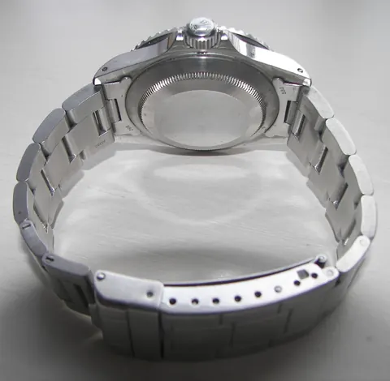
Plain steel case back and bracelet clasp of the Submariner 16610
Dr.K.. CC BY-SA 3.0. Source on Wikimedia Commons. Resized and converted to WebP.
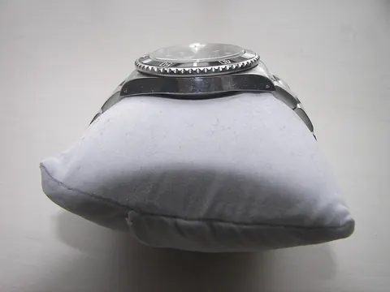
Side profile of the Submariner 16610 case on a watch pillow
No machine-readable author provided. Tasoskessaris assumed (based on copyright claims).. CC BY-SA 3.0. Source on Wikimedia Commons. Resized and converted to WebP.
Rolex Submariner Date "Bluesy" 16613
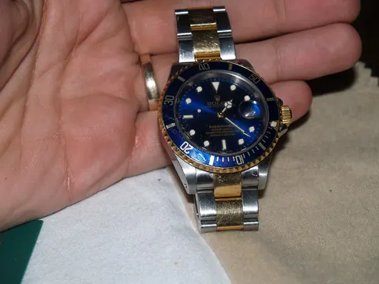
Rolex Submariner Date 16613 in steel and yellow gold with blue dial, held in the hand
Eternalsleeper at English Wikipedia. Public domain. Source on Wikimedia Commons. Resized and converted to WebP.
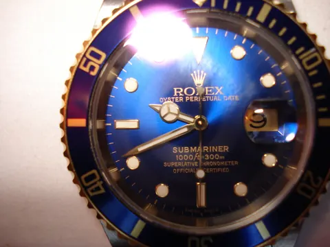
Close view of the blue sunburst dial and blue bezel of the Submariner 16613 with gold-edged markers
User:Eternalsleeper. Public domain. Source on Wikimedia Commons. Resized and converted to WebP.
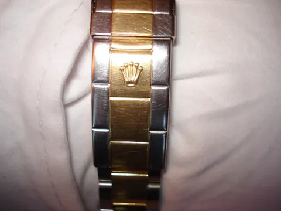
Submariner 16613 two-tone Oyster bracelet with the gold crown clasp
User:Eternalsleeper. Public domain. Source on Wikimedia Commons. Resized and converted to WebP.
Rolex Submariner (No Date) 14060M
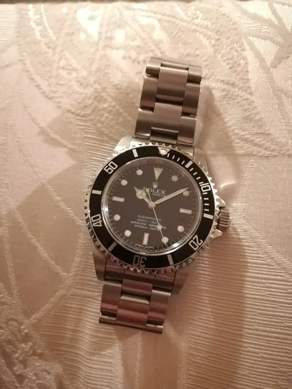
Rolex Submariner 14060M no-date with black dial and black bezel on an Oyster bracelet
Clyde94. CC BY-SA 4.0. Source on Wikimedia Commons. Resized and converted to WebP.
Rolex GMT-Master II 16710

Rolex GMT-Master II 16710 lying on its green Rolex box, black bezel and dial
Peter WILSON. CC BY-SA 4.0. Source on Wikimedia Commons. Resized and converted to WebP.

Front view of the GMT-Master II 16710 with Oyster bracelet, black 24-hour bezel and red GMT hand
File:Rolex GMT Master II - 16710 in it sitting on top of the box.jpg: Peter WILSON derivative work: Pittigrilli. CC BY-SA 4.0. Source on Wikimedia Commons. Resized and converted to WebP.
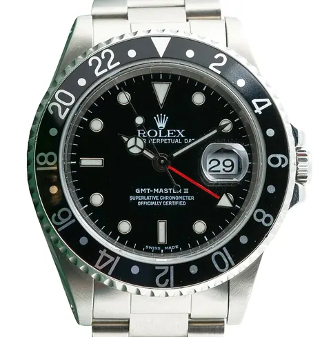
Dial close-up of the GMT-Master II 16710 showing the date window and red arrow GMT hand
File:Rolex GMT Master II - 16710 in it sitting on top of the box.jpg: Peter WILSON derivative work: Pittigrilli. CC BY-SA 4.0. Source on Wikimedia Commons. Resized and converted to WebP.
Rolex GMT-Master II "Batman" 116710BLNR

Rolex GMT-Master II 116710BLNR Batman on the wrist with blue and black ceramic bezel
gabihil. Public domain. Source on Wikimedia Commons. Resized and converted to WebP.
Rolex Cosmograph Daytona 16528
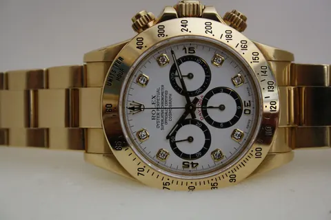
Rolex Cosmograph Daytona 16528 in yellow gold with white dial and black subdial rings
Alesili. CC BY-SA 3.0. Source on Wikimedia Commons. Resized and converted to WebP.
Rolex Cosmograph Daytona "Panda" 126500LN

Rolex Cosmograph Daytona 126500LN with white dial and black ceramic bezel on a green surface
Shuntfield. CC BY-SA 4.0. Source on Wikimedia Commons. Resized and converted to WebP.
Rolex Cosmograph Daytona 16523
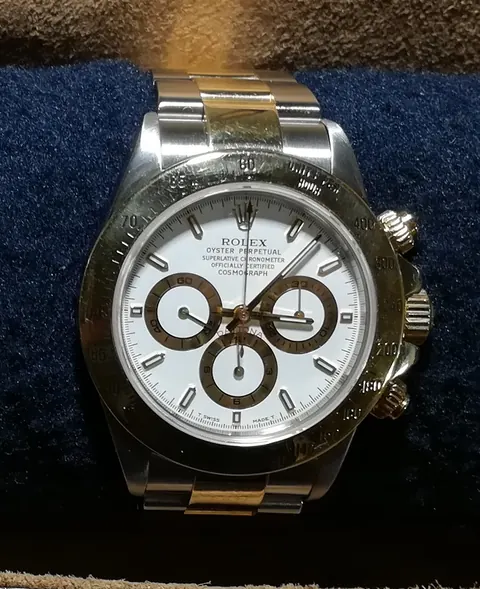
Rolex Daytona 16523 in steel and yellow gold with white dial and gold subdial rings
Clyde94. CC BY-SA 4.0. Source on Wikimedia Commons. Resized and converted to WebP.
Rolex Datejust 36 126234

Rolex Datejust 36 126234 with black sunburst dial and fluted bezel on navy leather
ajay_suresh. CC BY 2.0. Source on Wikimedia Commons. Resized and converted to WebP.

Datejust 36 126234 seen at an angle showing the fluted bezel and Jubilee bracelet
ajay_suresh. CC BY 2.0. Source on Wikimedia Commons. Resized and converted to WebP.
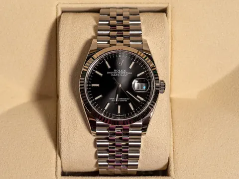
Datejust 36 126234 on its cream presentation cushion
ajay_suresh. CC BY 2.0. Source on Wikimedia Commons. Resized and converted to WebP.
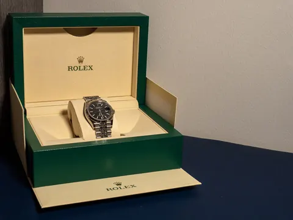
Datejust 36 126234 inside its green Rolex box with booklet
ajay_suresh. CC BY 2.0. Source on Wikimedia Commons. Resized and converted to WebP.
Rolex Explorer 14270
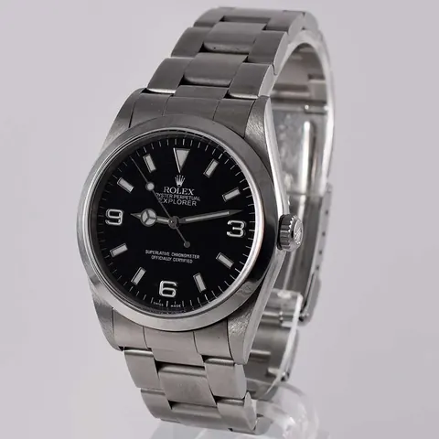
Rolex Explorer 14270 with black 3-6-9 dial on an Oyster bracelet, studio photo on grey
Thierry Mostra-store. CC BY-SA 4.0. Source on Wikimedia Commons. Resized and converted to WebP.
Rolex Explorer II "Cream Dial" 16550
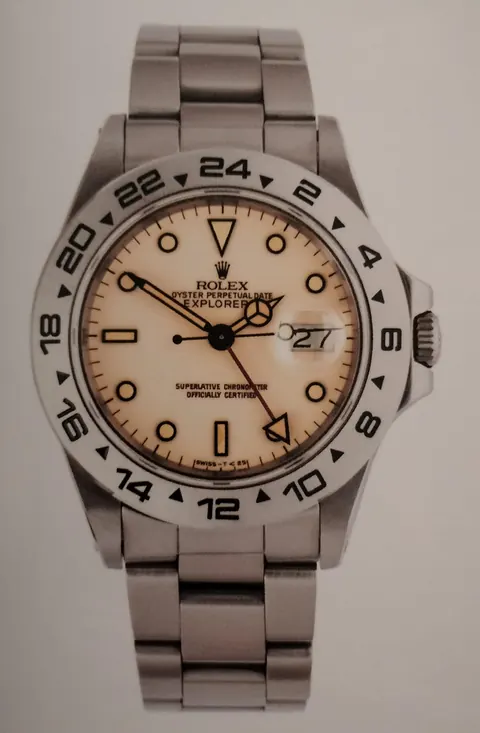
Rolex Explorer II 16550 with cream-coloured dial and steel 24-hour bezel
EMore98. CC BY-SA 4.0. Source on Wikimedia Commons. Resized and converted to WebP.
Rolex Day-Date 36 1803
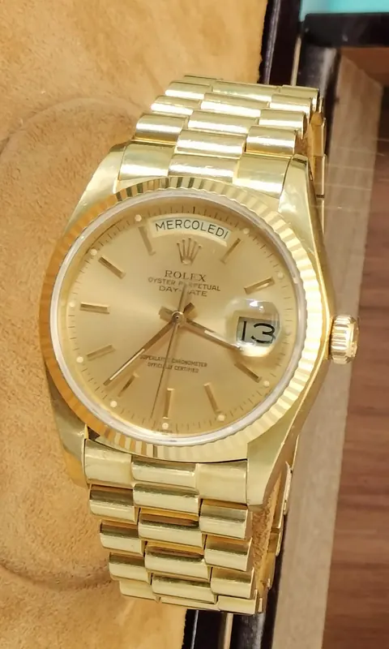
Rolex Day-Date 1803 in yellow gold with champagne dial and President bracelet
EMore98. CC BY-SA 4.0. Source on Wikimedia Commons. Resized and converted to WebP.
Patek Philippe Nautilus 5711/1A-010
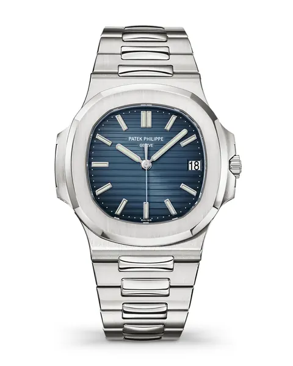
Patek Philippe Nautilus 5711/1A-010 with blue horizontally embossed dial, studio photo on white
Patek Philippe SA. CC BY-SA 4.0. Source on Wikimedia Commons. Resized and converted to WebP.
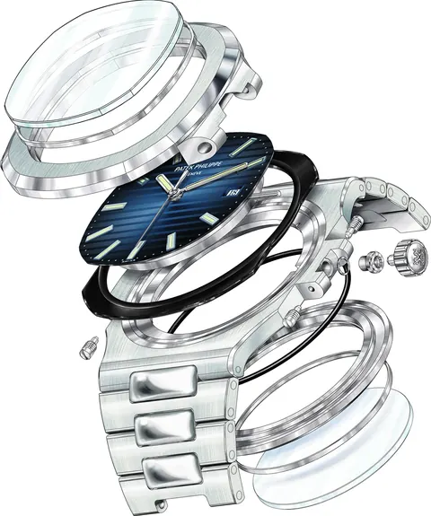
Exploded view of the Patek Philippe Nautilus 5711 case, dial and bracelet components
Patek Philippe SA. CC BY-SA 4.0. Source on Wikimedia Commons. Resized and converted to WebP.
Patek Philippe Calatrava 3919G
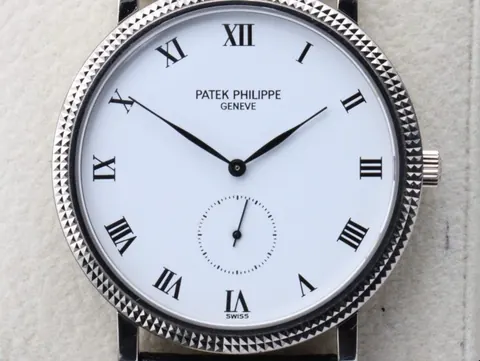
Patek Philippe Calatrava 3919G with white dial, Roman numerals and hobnail bezel
EMore98. CC BY-SA 4.0. Source on Wikimedia Commons. Resized and converted to WebP.
Audemars Piguet Royal Oak "Jumbo" Extra-Thin 15202ST
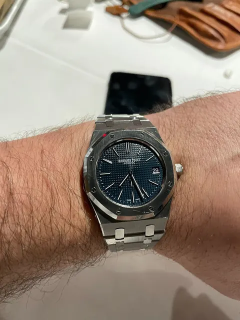
Audemars Piguet Royal Oak 15202 with blue Petite Tapisserie dial on the wrist
OpaleHorse. CC BY-SA 4.0. Source on Wikimedia Commons. Resized and converted to WebP.
Audemars Piguet Royal Oak Chronograph 25860ST
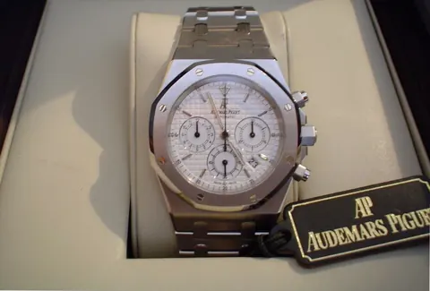
Audemars Piguet Royal Oak Chronograph 25860ST with silver dial, in its AP presentation box
Magnus26. CC BY-SA 3.0. Source on Wikimedia Commons. Resized and converted to WebP.
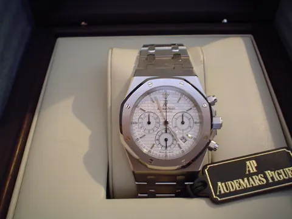
Royal Oak Chronograph 25860ST in its box with the Audemars Piguet card
Magnus26. CC BY-SA 3.0. Source on Wikimedia Commons. Resized and converted to WebP.
Audemars Piguet Royal Oak Offshore Diver 15720ST
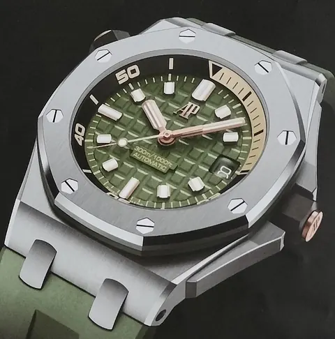
Audemars Piguet Royal Oak Offshore Diver 15720ST with green Méga Tapisserie dial and green rubber strap
Clyde94. CC BY-SA 4.0. Source on Wikimedia Commons. Resized and converted to WebP.
Omega Speedmaster Professional "Pre-Moon" 145.012-67
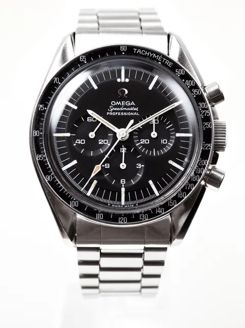
Vintage Omega Speedmaster Professional 145.012-67 with black dial and tachymeter bezel on an 1171 bracelet
Shane Lin. CC BY-SA 2.0. Source on Wikimedia Commons. Resized and converted to WebP.
Omega Seamaster 300M Chrono Diver 2225.80.00
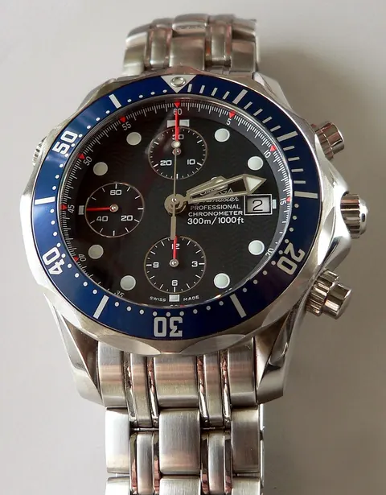
Omega Seamaster 300M Chrono Diver 2225.80.00 with blue wave dial and blue bezel
Rama. CC BY-SA 2.0 fr. Source on Wikimedia Commons. Resized and converted to WebP.
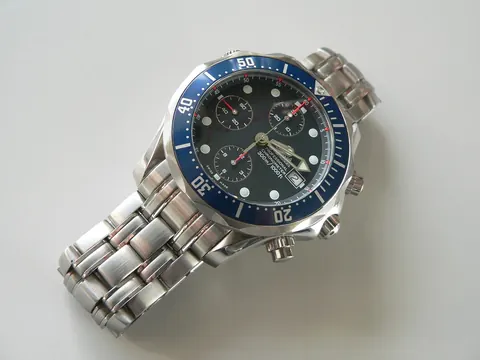
Omega Seamaster 300M Chrono Diver 2225.80.00 lying on a white surface
Rama. CC BY-SA 2.0 fr. Source on Wikimedia Commons. Resized and converted to WebP.
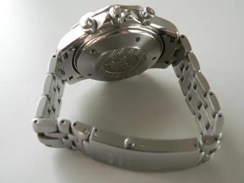
Case back and bracelet of the Seamaster 300M Chrono Diver 2225.80.00
Rama. CC BY-SA 2.0 fr. Source on Wikimedia Commons. Resized and converted to WebP.
Cartier Tank Solo XL 3800
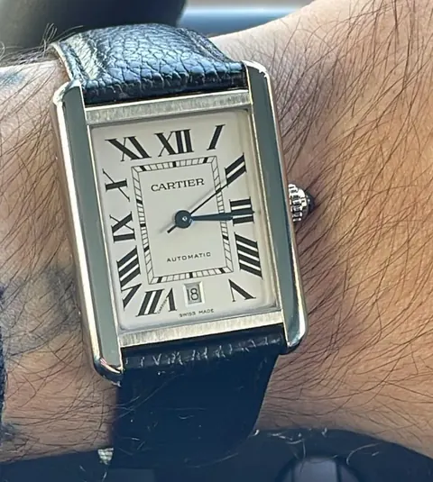
Cartier Tank Solo XL 3800 with silvered dial, Roman numerals and black strap on the wrist
EMore98. CC BY-SA 4.0. Source on Wikimedia Commons. Resized and converted to WebP.
Tudor Black Bay Fifty-Eight 18K M79018V
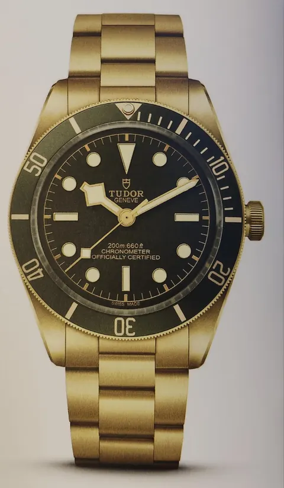
Tudor Black Bay Fifty-Eight 18K M79018V in yellow gold with green dial and bezel
EMore98. CC BY-SA 4.0. Source on Wikimedia Commons. Resized and converted to WebP.
Tudor Black Bay 54 M79000N-0001
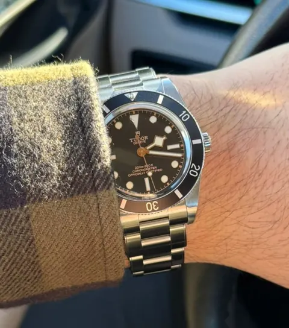
Tudor Black Bay 54 M79000N-0001 with black dial and bezel on the wrist
EMore98. CC BY-SA 4.0. Source on Wikimedia Commons. Resized and converted to WebP.
Grand Seiko Spring Drive "Snowflake" SBGA011
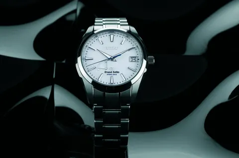
Grand Seiko SBGA011 Snowflake in titanium with white textured dial, photographed on a dark background
Faustine seiko. CC BY-SA 3.0. Source on Wikimedia Commons. Resized and converted to WebP.
Site photography
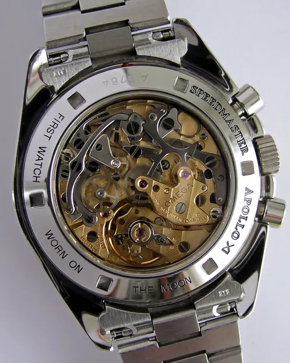
Open case back of an Omega Speedmaster Professional showing the cal. 864 chronograph movement
MadGeographer. CC BY-SA 3.0. Source on Wikimedia Commons. Resized and converted to WebP.